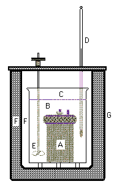

A calorimeter (calor = heat + metron = measure) should be literally a device to measure heat. In reality, most calorimeters are designed to minimize the transfer of heat between the system (inside) and the surroundings (outside). The confusion dates back to the caloric theory, in which heat was thought to be a property of materials rather than a transfer associated with the process by which a material undergoes a change of state. There are three basic types of calorimeters: adiabatic - in which the transfer of heat between system and surroundings is prevented, isoperibol - in which a small controlled heat exchange is permitted, and isothermal - in which either work or heat may be used to maintain constant temperature within the system. Essentially, these devices are measuring a heat equivalent for a change of state of the system.
This experiment utilizes a commercial calorimeter of the isoperibol type, the Parr Oxygen Bomb Combustion Calorimeter (schematic shown on the right). A sample (up to a gram or two) is contained under a pressure (~30 atm) of pure oxygen in a sturdy stainless steel bomb (A, ~1 liter) which is immersed in ~2 liters of water (B) in a metal bucket (C). The apparatus contains a thermometer (D, or thermocouple) to measure the temperature of the water and a stirrer (E) to insure uniform temperature throughout the system, and is insulated from the surroundings by two air spaces (F) and a non-conducting shell (G, insulated container).
The unit is assembled with the temperature of the water slightly below room temperature, and a slight positive slope is observed in a graph of temperature vs time. When the sample is ignited, the temperature within the bomb increases, then the temperatures of the water and the bucket increase until all are at the same temperature, usually slightly above room temperature. The temperature usually goes through a maximum, then a slightly negative slope is observed in the temperature vs time graph. In the adiabatic version of this calorimeter, hot and cold water are circulated through the outer jacket to match its temperature to that of the water in the bucket, thereby preventing the transfer of heat to or from the bucket. The temperature vs time graph is horizontal before ignition, and again after the temperature increase has been observed.
The temperature-time lines (A,B) are extrapolated to a common point in time. [These lines are parallel for the adiabatic apparatus, but not for the isoperibol apparatus] A vertical line is selected which will make the two shaded areas in the graph approximately equal. The temperature change for the experiment () is calculated from the final and initial temperatures on this line. The process is considered to take place instantaneously along the vertical line. The shaded areas (one positive, one negative) are considered to be proportional to the heat leak. Making these areas equal is assumed to nullify the heat leak, making the observed temperature change the same as would be observed in an adiabatic process. The average temperature of the measurement is taken as the temperature at the crossover point (C) between these areas.
The system (bucket, water, bomb, sample, oxygen) is assumed to be at inital temperature, , and pressure, ). The sample is ignited and the temperature of the system increases to at pressure . The bomb and its contents undergo no change in volume, but there is a very slight expansion of the water in the bucket due to the change of temperature. There is zero heat for this (pseudo) adiabatic process. There are two negligible increments of work - that due to the expansion of the water against the atmosphere (which will be compensated later), and that due to the electrical current used to heat the fuse wire which ignites the sample. It is then possible to calculate the heat (Q) that must be transferred in order to cool the system (bucket, water, bomb, reaction products, unburned oxygen) back to . The heat for this cooling is calculated as the heat capacity equivalent of the system () multiplied by the change in temperature:
The heat capacity of the system might be determined in several ways, but the most common method is to measure the temperature change for the combustion of a standard material (usually benzoic acid).
| (1) |
This net process may now be considered as:
with the remainder of the system (bucket, water, bomb) undergoing no change. Since this change involves no work,
| (2) |
The difference between and is usually small, and the derivative of energy with respect to pressure at constant temperature is also small for most materials (zero for an ideal gas), so the energy change for taking the products back to , , and some new volume () is considered negligible (an accurate value can be calculated for extremely precise work). The energy change per mole of sample () for the process is then
| (3) |
with a small correction for combustion of the fuse wire: ().
The molar enthalpy change () for this reaction is [],
| (4) |
and is calculated as the observed enthalpy of reaction:
| (5) |
in which is the difference in the number of moles of gaseous products and reactants per mole of sample reacted (calculated from the balanced reaction for the combustion process).
This enthalpy change is for the reaction at the experimental temperature (the average temperature from Fig. 2) and pressure (about 30 atm). For very precise work, this value is adjusted to the standard state conditions (1 atm) with the properties of the materials involved. The correction is normally small, and for this work it is assumed that the observed enthalpy is the standard heat of reaction (). This value is combined with the standard heats of formation of the products (usually water and carbon dioxide) to obtain the standard heat of formation () of the sample.